Verkefni 3
3D prentun og 3D skönnun
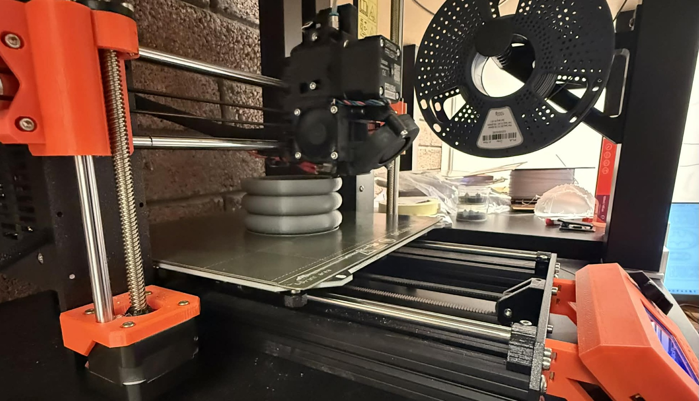
Verkefnislýsing
Helsta markmið verkefnisins er að hanna lítið módel fyrir 3D prentun sem ekki væri hægt að framkvæma með frádráttar framleiðslu. Við viljum hanna og framkvæma prófanir á prentaranum til að ákvarða hönnunar reglur og skorður áður en módelið er á endanum prentað út. Hluturinn má vera max 100g af plasti. Við ætlum einnig að 3D skanna einhvern hlut.
Hönnun og val
Mig hefur lengi langað í einhvern flottan og frekar nýtískulegan blómapott heim til mín. Ég sá þessa blómapotta á myndunum hér fyrir neðan á vefsíðunum Amazon og IKEA. Mér fannst þeir svo töff að ég ákvað að 3D prenta eftirhermu af þeim.
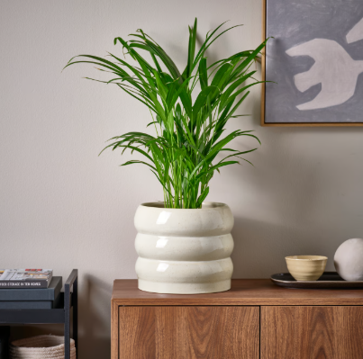
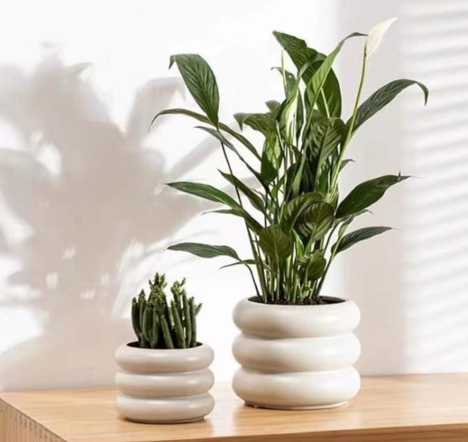
Upphaflega ætlaði ég að 3D prenta frekar stóran blómapott svo að ég gæti sett stóra plöntu ofan í hann, en um leið og ég færði teikninguna mína í PrusaSlicer kom í ljós að ég var að nota alltof mikið efni. Þar næst ætlaði ég að prófa að hafa ribburnar þrjár holóttar svo að ég væri að nota sem minnst efni, en í prófuninni hér fyrir neðan kom í ljós að það væri ekki hægt. Ég ákvað því að minnka blómapottinn töluvert svo að einungis ein lítil planta kæmist í hann. Til að tryggja að allar mælingar væru réttar studdist ég við mál af litlum kaktusi frá IKEA. Endanleg stærð blómapottsins varð því 7 cm í innra þvermál, 9 cm í ytra þvermál og 8 cm á hæð. Ég varð líka að hafa ribburnar fimm í staðinn fyrir þrjár því annars væri ég að nota alltof mikið af efni.
Það tók mig vandræðanlega langan tíma að teikna blómapottinn því ég var alltaf að breyta stærðinni á honum. Ég hannaði hann í forritinu Fusion 360.
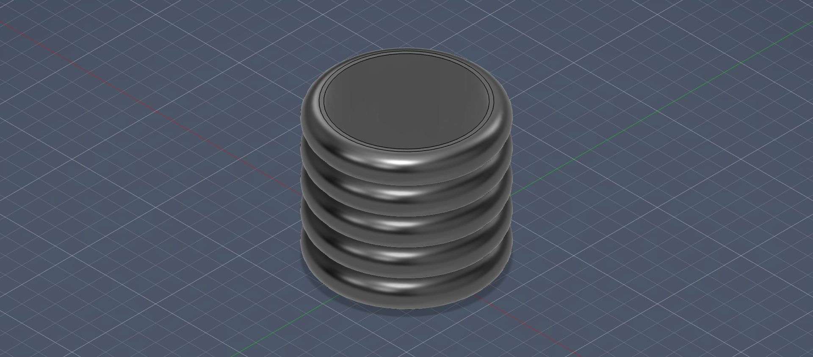
Prentunarpróf
Þar sem að blómapotturinn átti upphaflega að vera með ribbum og þær holar að innan þurfti ég að gera nokkrar prófanir til þess að tryggja að þetta myndi allt prentast rétt út. Ég byrjaði á að gera beygjupróf til að athuga hvernig prentarinn réði við beygjur. Jafnframt teiknaði ég prófið viljandi of stórt í Fusion 360 til að sjá hvernig prentið kæmi út ef líkanið væri skalað niður í PrusaSlicer. Hér fyrir neðan má sjá hvernig beygjuprófið kom út.
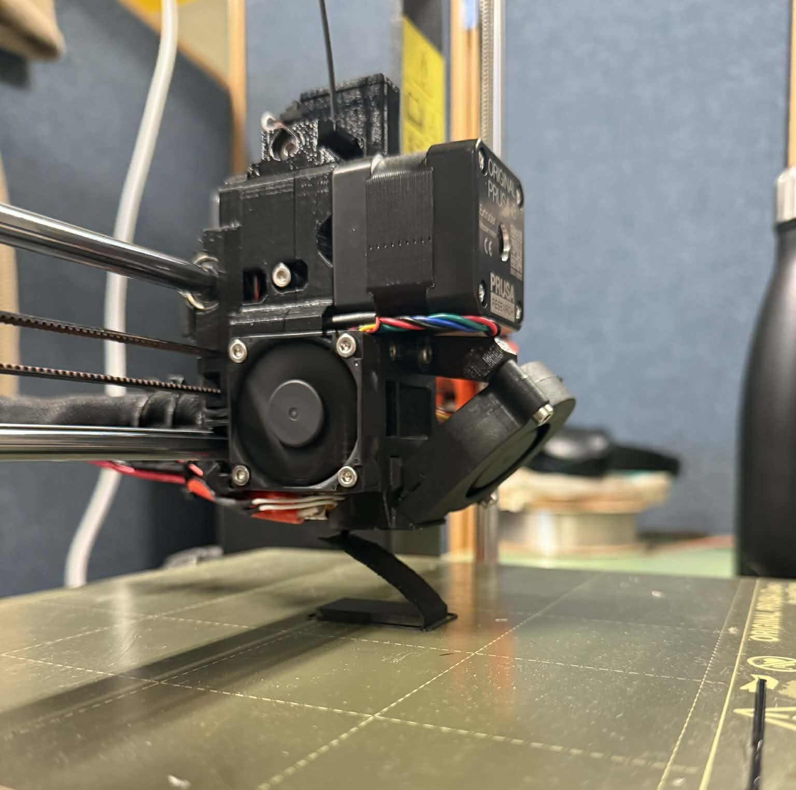
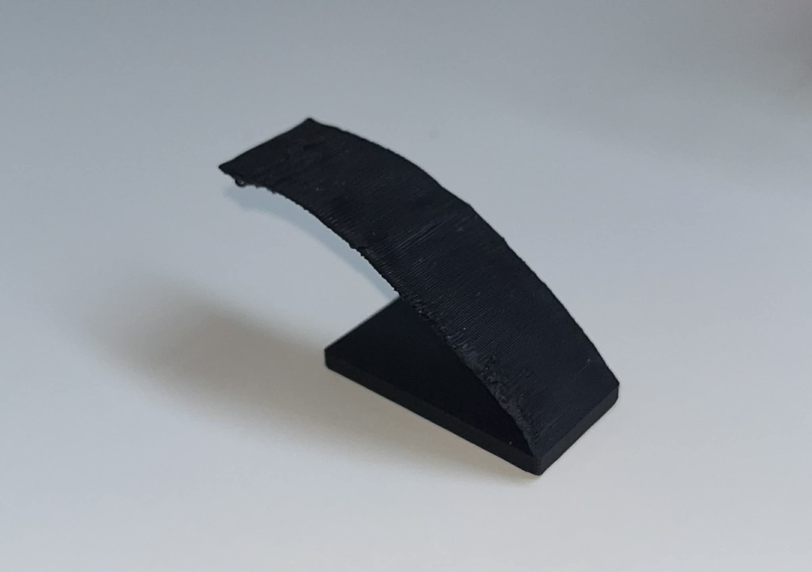
Að mínu mati gerði ég beygjuna allt of þunna þannig að prentarinn átti erfitt með að koma efninu rétt fyrir í henni. Það varð til þess að hluti efnisins fór aðeins niður fyrir beygjuna. Þetta sýndi mér að ég gæti ekki haft rifurnar mjög þunnar að innan, þar sem prentarinn myndi þá ekki ráða við að prenta þær rétt.
Eftir að þetta var búið 3D prentaði ég tvær mismunandi gerðir af ribbum þ.e.a.s. eina sem var hol að innan og aðra sem var það ekki. Þegar ég byrjaði að prenta þær út kom hins vegar í ljós að ribban sem átti að vera hol að innan náði ekki nógu góðu gripi á prentplötunni og því tókst ekki að prenta hana út. Helsta ástæðan var sú að neðsti hluturinn af ribbunni var allt of þunnur þegar hún var hol að innan og sama hvernig ég breytti henni gerðist alltaf sama vandamálið. Því var ákveðið að lokum að prenta út einungis ribbuna sem var gegnheil að innan. Þessi ribba prentaðist mjög vel út í 3D prentaranum en notaði að sjálfsögðu aðeins meira efni en hin.
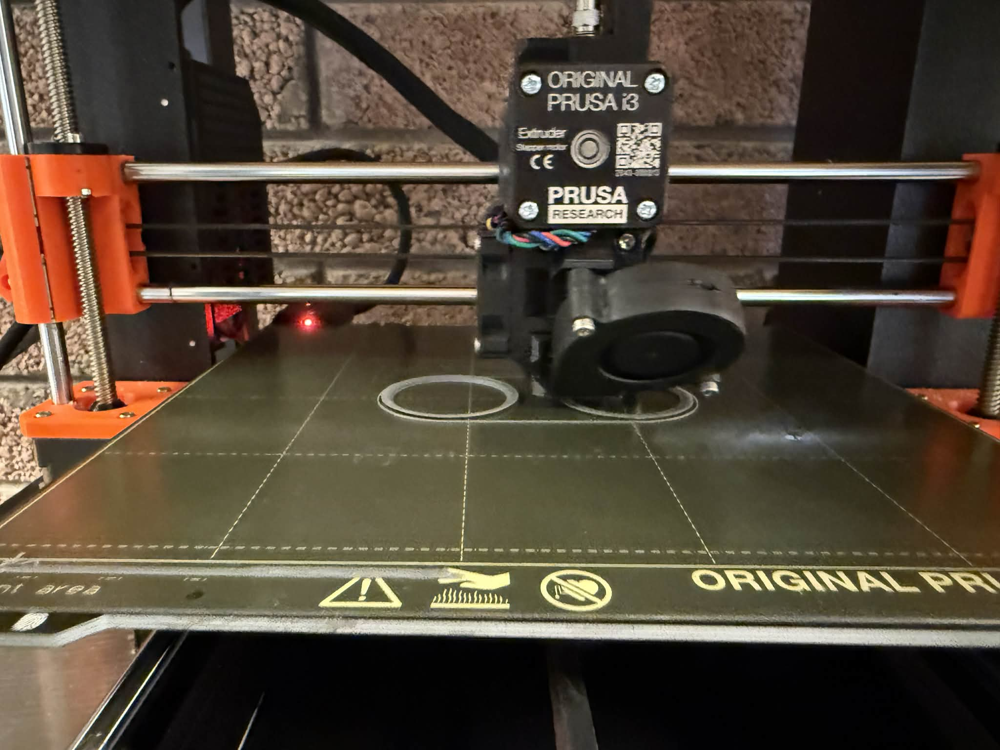

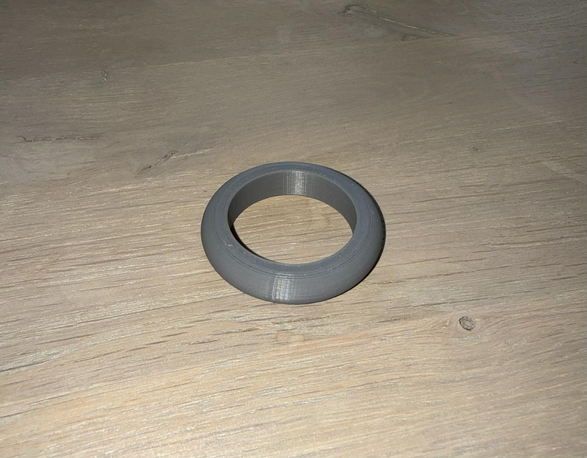
3D Prentun
Þegar ég hafði lokið við að hanna blómapottinn í Fusion 360 þurfti ég að færa hann yfir í PrusaSlicer svo ég gæti prentað hann út. Til þess að flytja módelið úr Fusion yfir í PrusaSlicer vistaði ég það sem .3mf skjal í Fusion og opnaði það síðan í PrusaSlicer. Þetta ferli var allt mjög þægilegt en til að átta mig betur á forritinu og læra á það horfði ég á myndband Hafliða um notkun PrusaSlicer. Í fyrstu sýndi forritið að það myndi taka um það bil átta klukkustundir að prenta blómapottinn en eftir að ég breytti stillingunni í SPEED styttist prenttíminn niður í sex klukkustundir. Að lokum sótti ég G-code skrána, færði hana yfir á SD-kort og setti það í 3D-prentarann. Þá gat ég hafið prentun á blómapottinum.
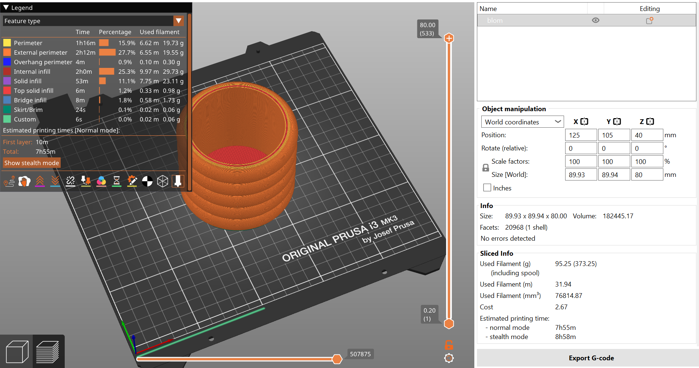
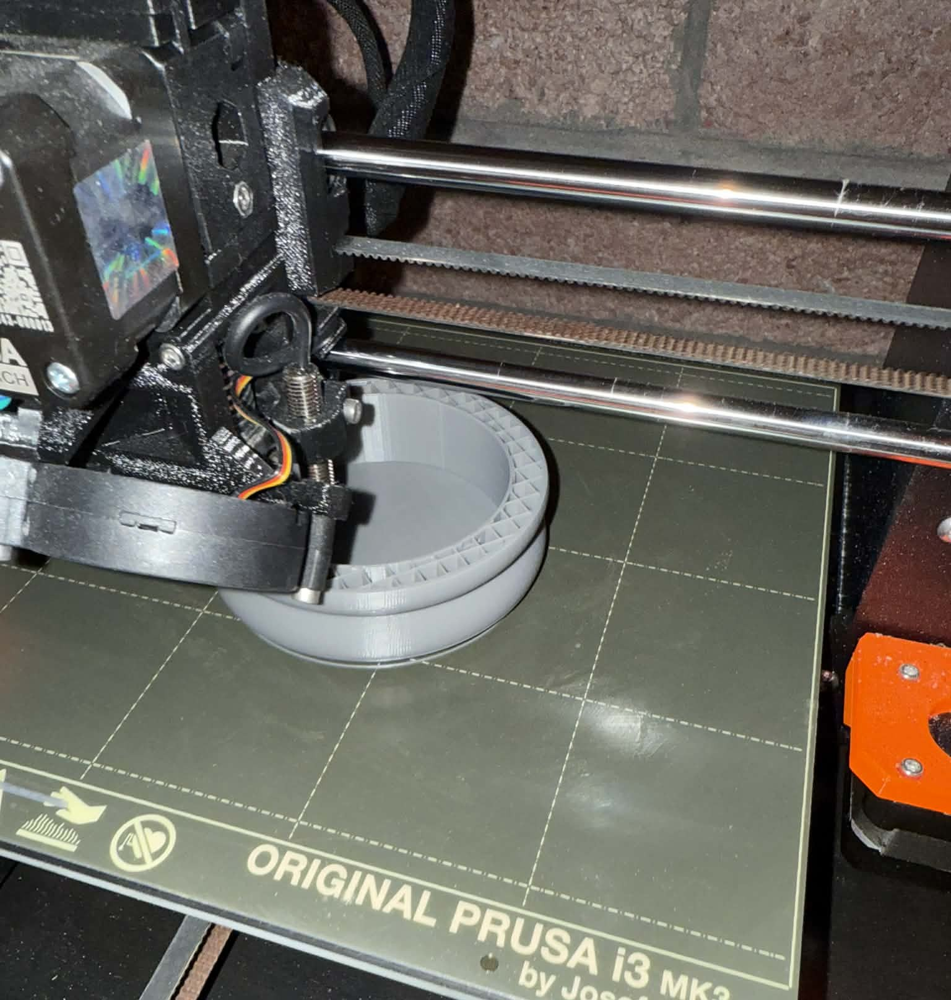
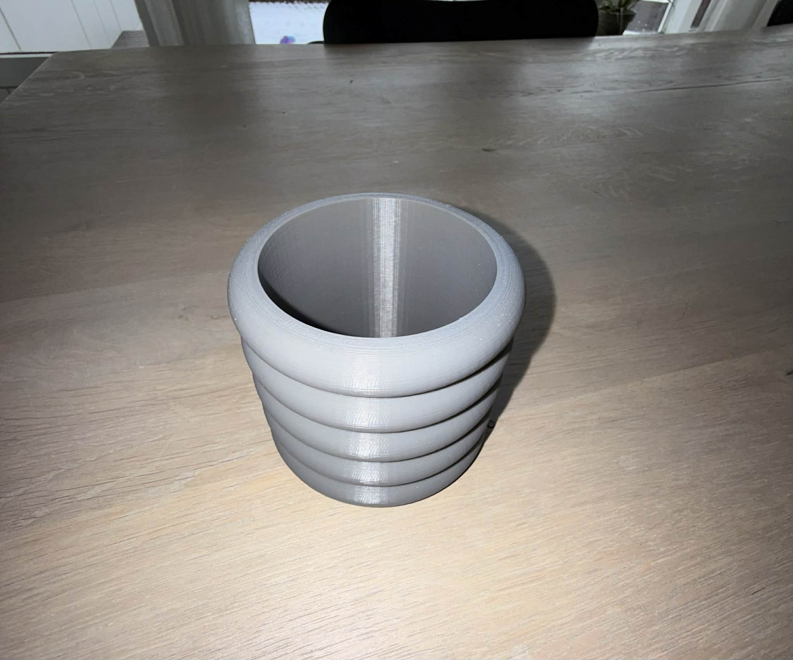
3D skönnun
Þessi hluti verkefnisins var tiltölulega einfaldur. Til að 3D skanna byrjaði ég á að hlaða niður Qlone appinu sem leyfir manni að 3D skanna með símanum. Ég ákvað að skanna kókómjólkurfernu sem var til inni í ísskáp hjá mér. Til þess að skanna fylgdi ég leiðbeiningunum sem appið gaf mér. Það var frekar erfitt að skanna hlutinn með appinu vegna þess að það kom hringur yfir hlutinn sem var úr mörgum litlum kössum og ég þurfti að ná hverjum kassa til þess að hluturinn myndi skannast. Þetta tók u.þ.b. 5 mínútur og þurfti ég að skanna fernuna tvisvar sinnum inn því fyrsta skiptið kom ekki nógu vel út. Skannið má sjá hér fyrir neðan.
Mér finnst 3D-skannið hafa komið nokkuð vel út og allur texti á fernunni sést sjúklega vel. Það eina sem mætti kannski vera betra er notkun appsins Qlone. Það var alltof tímafrekt að skanna hlutinn inn og stundum erfitt að ná öllum hliðunum nógu vel. Ég þurfti því að vera mjög nákvæm og fara hægt yfir allan hlutinn svo skannið tækist. Það hefði líka verið betra ef appið væri aðeins einfaldara í notkun og tæki skemmri tíma að vinna skannið. Samt sem áður er ég ánægð með lokaútkomuna því skannið heppnaðist vel og sýnir hlutinn á skýran hátt.
Ég prófaði líka að 3D-skanna blómapott með blómi í til að sjá hvort appið næði því, en það tókst ekki. Eftir að hafa reynt í um tíu mínútur gafst ég upp. Það sýndi mér að appið virkar betur á einfaldari hluti en flóknari lögun getur verið erfiðari að skanna.
Lærdómur
Verkefnið var mjög skemmtilegt og lærði ég mikið af því. Ég hef lengi velt því fyrir mér hvernig 3D-prentarar og þrívíddarskannanir virka og með þessu verkefni fékk ég mun betri skilning á því. Það var líka sérstaklega áhugavert að sjá hvernig hugmynd fer frá hönnun yfir í raunverulegan hlut. Blómapotturinn kom út eins og ég hafði vonast til og ég er mjög ánægð með lokaútkomuna. Þrívíddarskönnunin kom einnig vel út en var afar tímafrek miðað við að aðeins var verið að skanna frekar einfaldan hlut inn.
Tala um takmarkanir!!